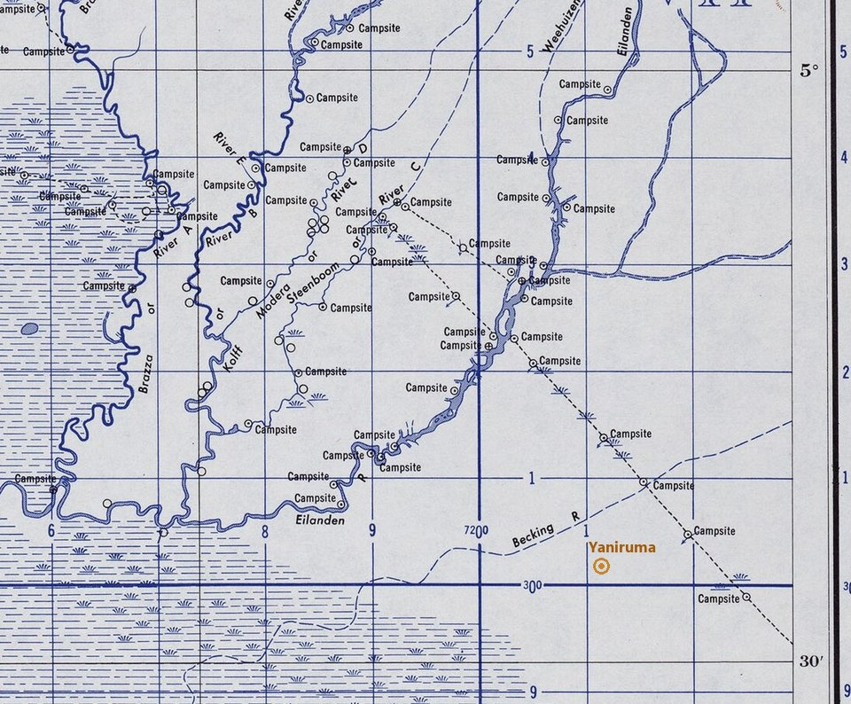
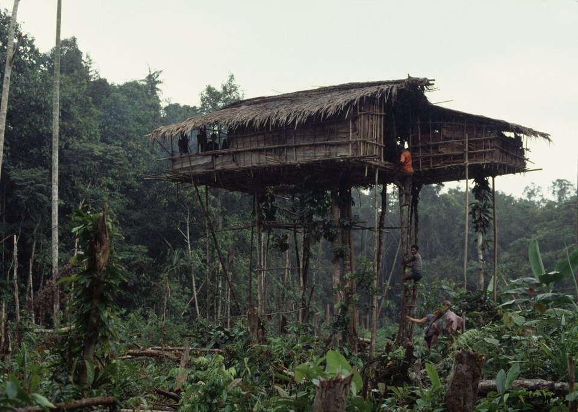
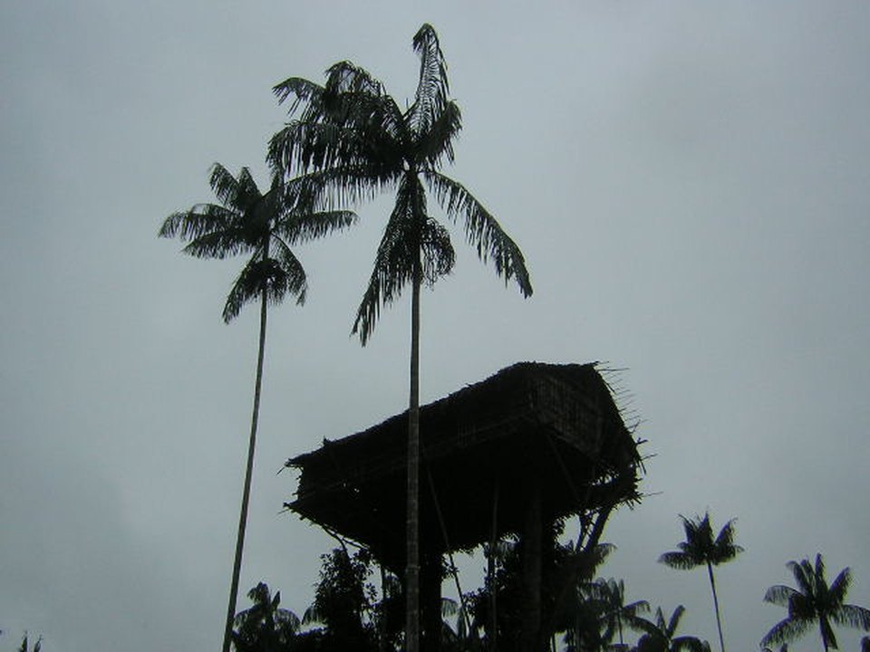
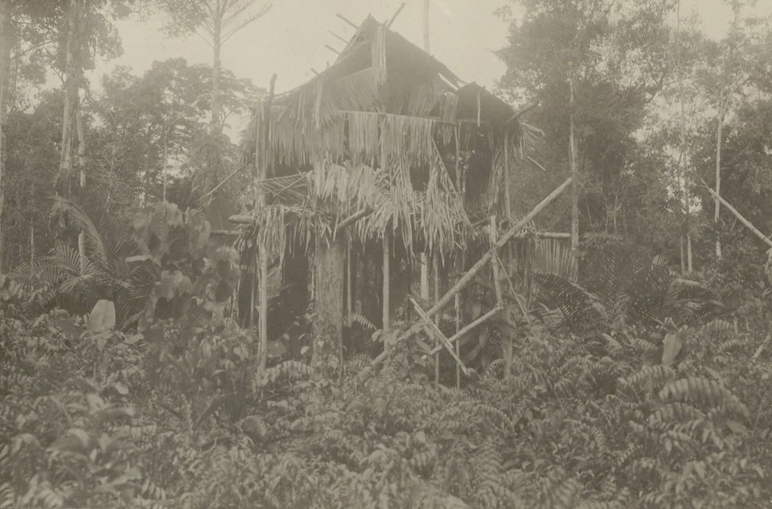

Os korowai e as casas no alto das árvores
Poucos povos do mundo foram tão fotografados nos últimos trinta anos. Quase todas as fotos mostram a mesma coisa — uma casa na copa de uma árvore —, e é justamente essa a casa que os korowai menos constroem para morar. Este dossiê é sobre o que a câmera procurou ali, o que ela encomendou, e o que ficou de fora do quadro.
- Onde
- Sul da Papua, Indonésia
- Coordenadas
- 5°25′S 139°49′E (Yaniruma)
- Território
- ≈ 1.300 km², entre os rios Eilanden e Becking
- População
- cerca de 4.000
- Contato regular
- desde 4 de outubro de 1978
- Situação
- contatados; parte vive em aldeias, parte na floresta
No sul da Nova Guiné, do lado indonésio da ilha, há uma planície de floresta alagadiça cortada por dois rios grandes que descem das montanhas para o mar de Arafura: o Eilanden, ao norte, e o Becking, ao sul. A terra fica a uns cem metros acima do mar, chove mais de cinco metros por ano, e entre os dois rios vivem, espalhados em dezenas de territórios de clã, os korowai — cerca de quatro mil pessoas que falam uma língua da família awyu–dumut e que, até o fim dos anos 1970, não tinham contato regular com ninguém de fora da região.
Em 1996, uma fotografia aérea publicada pela National Geographic mostrou uma casa korowai pendurada na copa de uma árvore, muito acima da floresta. Desde então, o povo passou a ser conhecido no mundo como "o povo das casas na árvore" — e, quase sempre na mesma frase, como "os últimos canibais". Vieram dezenas de equipes de filmagem e alguns milhares de turistas. Vieram também, mais tarde, as confissões: parte do que foi filmado tinha sido construído para ser filmado.
Ao contrário da Sentinela do Norte, aqui não há recusa de contato a respeitar de longe: os korowai conhecem missionários, comerciantes, funcionários do Estado e turistas há mais de quarenta anos, e muitos vivem em aldeias com escola e pista de pouso. O mistério deste dossiê é outro, e é sobre nós: por que a imagem que o mundo guardou dos korowai é tão diferente da que eles próprios descrevem.
01Entre o Eilanden e o Becking
Comece pelo mapa. O território korowai fica na bacia alta do Eilanden, hoje dividido entre cinco regências de duas províncias indonésias — Boven Digoel, Mappi e Asmat, na Papua do Sul; Pegunungan Bintang e Yahukimo, na Papua das Terras Altas. São pouco menos de 1.300 km² de floresta baixa e pantanosa, com solo seco só nas elevações suaves onde se planta e se mora.
A vida se organiza em torno do clã e do território do clã. Os korowai plantam banana e outras roças em sistema de coivara, extraem amido da palmeira de sagu, caçam com arco e armadilha, criam porcos que funcionam como moeda de troca, e fazem, uma vez na vida de cada clã, a grande festa das larvas de sagu, que reúne vizinhos de muitos territórios. Os vizinhos importam: ao sul ficam os kombai, que falam uma língua aparentada e constroem casas parecidas; a oeste, os citak, cujas expedições de caça de cabeças contra korowai e kombai só pararam, segundo o registro missionário, em 1966.

02O primeiro contato, e as duas datas
Há duas datas na literatura, e elas não se contradizem tanto quanto parece. A primeira é de março de 1974: uma expedição americana conduzida pelo antropólogo Peter Van Arsdale, pelo geógrafo Robert Mitton e pelo agente de desenvolvimento comunitário Mark Grundhoefer encontrou, nos dias 17 e 18, trinta homens na margem sul do alto Eilanden, a leste da foz do rio Kolff, e anotou uma lista básica de palavras. O próprio registro da expedição descreve o grupo como korowai ocidentais ou citak orientais — a identificação ficou em aberto.
A segunda data é a que a etnografia adota como início do contato regular. Depois de um ano e meio de sobrevoos e viagens de barco, o missionário holandês Johannes Veldhuizen, da Missão das Igrejas Reformadas (ZGK), entrou pelo sudoeste, a partir da terra dos citak, em março de 1978. O primeiro encontro com korowai aconteceu em 4 de outubro de 1978, mediado por um homem citak-kombai chamado Nggop, que tinha parentesco com os clãs Molonggai e Sendekh.
Em 30 de março de 1979, Veldhuizen obteve de um kombai, Yanggio Ambuakharun, permissão para abrir um posto missionário na foz do riacho Yaniruma, perto de onde o Sokom deságua no Becking. Ali vieram uma pista de pouso, uma loja com machados de ferro, sal e anzóis, uma escola em indonésio e um posto de saúde. No começo, Yaniruma era mais kombai do que korowai: os korowai faziam casas lá, mas as usavam de tempos em tempos, quando trabalhavam na pista ou nas estradas.
O contato avançou devagar, rio acima. Em 1985 abriu-se a primeira aldeia propriamente korowai; em 1986, Manggel; em 1988, Yafufla; em 1989, Mabül, na foz do rio Mabül no Eilanden, por uma expedição do governo ligada ao censo nacional de 1990. Algumas famílias korowai se mudaram para as aldeias citak de Mbasman e Mu, na borda sudoeste do território. E os próprios etnógrafos registram o efeito colateral mais grave dessa mudança: juntar clãs que não costumavam viver lado a lado, no chão de outro clã, fez as acusações de feitiçaria dispararem nos primeiros anos de cada aldeia.
Ainda em 1997, van Enk e de Vries resumiam assim a situação: fora de viagens ocasionais da missão, o contato regular se limitava às margens pacificadas dos dois rios, e a maioria dos clãs korowai continuava sem contato. Quinze anos depois, Stasch escrevia que cerca de metade dos korowai já construía casas no chão, em aldeias permanentes, e que muitos alternavam entre a aldeia e a floresta. As duas frases descrevem o mesmo processo em dois momentos.
03A casa que eles moram
A casa korowai mais comum se chama xaim e é, de fato, uma casa elevada: um piso de casca e varas sobre troncos de árvore cortados no alto, com escada de um só tronco entalhado. O dado que muda a conversa é a altura. Nas medições de Stasch, o piso dessas casas fica entre três e nove metros do chão, com mediana de cerca de quatro metros e meio. Van Enk e de Vries, escrevendo sobre a região do Becking, dão uma média de oito a doze metros. As duas medidas são de quem morou lá; a diferença provavelmente está na região e no que cada um contou como "casa".

Há um segundo tipo, quase nunca fotografado: o xaü, casa no chão ou a menos de um metro dele. E há o terceiro, o que o mundo conhece: o lu-op, literalmente "casa de subir", construído na copa de uma árvore viva, entre quinze e trinta e sete metros de altura. Van Enk registrou exemplares de até 45 metros rio acima. Quando os korowai contam a própria vida como uma sequência de casas, cerca de sete em cada dez são xaim, quase todas as outras são xaü — e só uma em cada cinquenta é casa de copa.
Por que elevar a casa? A explicação que viaja pelo mundo é militar: a altura protegeria contra inimigos. Ela tem uma versão séria — em 1998, a agência holandesa de pesquisa divulgou o estudo de van Enk e de Vries dizendo que as casas altas, com escada removível, eram defesa contra os caçadores de cabeças citak — e uma versão inflada, que circula em verbetes e legendas, com raptos para escravidão e incêndios criminosos que os korowai não praticam. Stasch, perguntando aos moradores, ouviu outra ênfase. O que eles mais citam é o medo de dois tipos de monstro — o khakhua, o feiticeiro que causa todas as mortes, e o laleo, o morto que volta e ronda a beira da vida dos vivos. A altura é proteção contra o que ataca de noite e não se vê. Os korowai também gostam, simplesmente, da vista aberta que uma casa alta dá; homens que construíram casas de copa no passado diziam que queriam ver o mundo bonito, e ser comentados como fortes.
04A casa que a câmera encomenda
A fotografia mais vista de uma casa korowai foi feita de helicóptero por George Steinmetz em 1995, durante uma expedição com Veldhuizen e van Enk a clãs ainda sem contato, e abriu a reportagem da National Geographic de 1996. Mostra uma casa de copa — e, segundo Stasch, a casa já estava abandonada quando foi fotografada, com telhado e paredes arrancados pelo vento pouco depois de prontos. Dois anos antes, em 1994, um canal americano tinha exibido o filme Treehouse People: Cannibal Justice. O título já trazia as duas ideias que iam grudar no povo.
O que veio depois foi uma demanda. Turistas e equipes de televisão chegavam procurando a casa da foto, e a casa da foto era rara. Os korowai passaram a construí-la sob encomenda. Em março de 2010, para ficar num só mês registrado por Stasch, foram erguidas duas casas de copa para estrangeiros: uma para um grupo de turistas alemães, outra para uma equipe de televisão japonesa. E isso não é uma descoberta recente: já em 1997, van Enk e de Vries anotavam que as agências de turismo levavam grupos a casas na árvore "reais e falsas" na faixa do Becking entre Yaniruma e Yafufla.

O caso mais documentado é o da BBC. Em 2009, uma equipe da série Human Planet filmou uma família korowai construindo e ocupando uma casa no alto de uma árvore; o episódio foi ao ar em 2011. Em 2018, gravando outra série, My Year with the Tribe, o apresentador Will Millard ouviu dos próprios korowai que aquelas casas tinham sido feitas para os produtores estrangeiros, e que não eram onde eles moravam. Em abril de 2018 a BBC reconheceu publicamente que mostrar a família se mudando para a casa como se fosse um lar de verdade "não é preciso", e retirou a série de distribuição para uma revisão editorial — que, semanas depois, encontrou outra cena encenada, de caça à baleia, em outro episódio.

O argumento de Stasch, num artigo de 2011 dedicado só a isso, é que a foto da casa de copa diz mais sobre quem fotografa do que sobre quem mora. A imagem antecede a casa: o fotógrafo chega com a foto da National Geographic na memória, contrata a construção, e o resultado parece, a quem vê, o registro transparente de um objeto que existia independentemente da câmera. É um caso raro em que dá para medir o tamanho do viés — uma casa em cada cinquenta na vida real, quase todas nas fotografias.
05Khakhua: o que se sabe sobre o canibalismo
Esta é a parte do assunto em que o sensacionalismo mais distorceu, e também a parte em que negar tudo seria outra distorção. O registro etnográfico é consistente e vem de quem morou lá. Os korowai, como outros povos awyu, acreditam no khakhua — escrito xaxua na grafia de Stasch —, um homem do próprio povo que deixou de ser humano por um desejo de comer gente. O khakhua age em segredo: devora por dentro os órgãos vitais da vítima, põe no lugar matéria falsa, e a pessoa segue vivendo sem lembrar de nada, até morrer do que parece ser outra causa. Toda morte, nessa lógica, tem um khakhua por trás.
A resposta tradicional era a execução. O homem apontado como khakhua — muitas vezes pelo próprio moribundo — era julgado, frequentemente sob tortura, morto, e o corpo era comido e distribuído entre clãs aliados. Van Enk e de Vries sublinham dois limites: o consumo de carne humana acontecia só nesse contexto, nunca como punição de outro crime nem como guerra, e os korowai não praticavam a caça de cabeças comum entre vizinhos. Stasch escreve, em 2011, que esses episódios tinham acontecido dentro da memória da maioria dos adultos.
Antes de ser uma prática, o khakhua é uma teoria da morte — e a execução era a forma de justiça que essa teoria exigia.
Em 2001, num artigo cujo título já é a tese — Giving up homicide, "desistir do homicídio" —, Stasch descreveu como os korowai diziam ter abandonado a execução de feiticeiros, em parte porque já se sentiam ambivalentes em relação à prática, em parte por causa de incidentes com a polícia indonésia. Um caso do começo dos anos 1990, em Yaniruma, terminou com um homem preso e maltratado pela polícia por matar um cunhado acusado. A crença no khakhua não desapareceu — o que mudou foi a resposta a ela.
A mídia preferiu o tempo presente. Em maio de 2006, o jornalista australiano Paul Raffaele guiou a equipe do programa 60 Minutes do Canal Nine até os korowai para uma reportagem chamada "Os últimos canibais", centrada num menino de cerca de seis anos, Wawa, apresentado como condenado a ser morto e comido por ter sido acusado de feitiçaria depois da morte dos pais. O Canal Seven mandou sua apresentadora para "resgatá-lo" diante das câmeras; a equipe foi expulsa da Indonésia por entrar com visto de turista. Em 2019, um ex-diretor de jornalismo do Nine admitiu ter avisado as autoridades indonésias para sabotar a concorrente. O menino nunca foi ferido, e foi criado por outra família. Em setembro de 2006, Raffaele publicou na revista Smithsonian um relato em que um guia afirmava que as execuções continuavam nos clãs mais distantes.
06Aldeia, turismo e o que ainda é isolamento
Desde 1990, segundo Stasch, os korowai receberam cerca de cinquenta equipes de filmagem e alguns milhares de turistas, vindos de quase todos os países europeus, dos Estados Unidos, do Japão e da Austrália. O turismo virou uma das poucas fontes de dinheiro da região: carregar bagagem, hospedar, guiar, construir, apresentar. Nos trabalhos de 2015 a 2019, Stasch descreve esses encontros como "dramas de alteridade": os dois lados vão ali para olhar a estranheza do outro. O turista quer ver gente fora da história; o korowai, por sua vez, tem as próprias teorias sobre aquela gente branca que paga para fotografar — uma delas, muito repetida, é a de que as fotos são vendidas a um "chefe" lá fora por muito dinheiro.
O que não é isolamento, então? Nenhum clã korowai está "sem contato" no sentido da Sentinela do Norte. Todos estão, há décadas, dentro de uma rede de missão, Estado, comércio e turismo, mesmo os que preferem viver longe das aldeias. O que existe é distância escolhida e variável: famílias que passam meses na floresta, clãs do norte que mantêm pouco contato com as aldeias do Becking e do Eilanden. Isso é modo de vida, não fóssil.
E há pressões que nada têm de pitoresco. Desde os anos 1980, empresas procuraram petróleo e ouro aluvial na área, sem continuidade. Em 2018, uma corrida de garimpo ilegal de ouro dentro do território korowai levou o governo provincial a anunciar a retirada dos garimpeiros. Em abril de 2025, o braço armado do movimento separatista papua, o TPNPB, disse ter interrompido garimpo ilegal "no Korowai" de Yahukimo — no mesmo mês em que matou mais de uma dezena de garimpeiros civis em outro ponto da regência.
072026: a guerra chegou à pista de pouso
A notícia mais recente sobre os korowai não tem casa na árvore nenhuma. Em 11 de fevereiro de 2026, um avião de pequeno porte da Smart Air foi alvejado depois de pousar na pista de Danowage, conhecida como Korowai Batu, no distrito de Kombai, em Boven Digoel. O piloto e o copiloto morreram; os treze passageiros saíram vivos. O TPNPB reivindicou o ataque; a polícia atribuiu a ação a um grupo armado de Yahukimo. Os voos para a área foram suspensos, cerca de quarenta moradores fugiram para Senggo, e nove professores e profissionais de saúde que atendiam a região foram retirados para Jayapura.
Em 2 de julho de 2026, um piloto americano de uma organização de aviação missionária foi morto em outro distrito de Yahukimo, num ataque atribuído ao mesmo braço armado. A partir de 22 de julho, segundo a imprensa papua e organizações de direitos humanos, operações das forças de segurança indonésias atingiram a área korowai do lado de Yahukimo, com relatos de três civis mortos e de dezenas a centenas de pessoas refugiadas na floresta, entre elas mulheres grávidas e crianças, com falta de comida e de remédio. Em 22 de agosto, a igreja evangélica GIDI relatava pelo menos vinte e seis mulheres e uma criança abrigadas num único ponto, e três mortes entre os deslocados.
O contraste com a imagem global é difícil de exagerar. Enquanto vídeos e listas sobre "o povo das árvores" continuam circulando, a área korowai de 2026 é uma zona de conflito armado entre um movimento separatista e um Estado, com pista de pouso fechada, escola sem professor e famílias escondidas na mesma floresta das fotografias.
08As leituras, da mais sóbria à mais improvável
A casa elevada é real; a casa de copa, hoje, é sobretudo encomenda
É o que sustentam, juntas, as duas etnografias de longo prazo e a própria BBC. A casa comum sobre troncos existe, é antiga e continua em uso fora das aldeias. A casa no topo da copa também existe na tradição — mas era rara, pouco habitada por famílias, e desde os anos 1990 é construída principalmente por pedido e pagamento de quem chega com câmera.
O ponto fraco é de escala, não de direção: não há contagem sistemática recente de quantas casas de copa foram feitas para estrangeiros e quantas para uso próprio. Mas a confissão de 2018, o registro de 1997 sobre casas "falsas" e as encomendas pagas de 2010 apontam todos para o mesmo lado.
A altura serve para defesa contra inimigos
Tem base e tem autor. Os citak caçaram cabeças entre korowai e kombai até 1966, e o medo desses ataques ainda era forte entre os moradores do Becking nos anos 1990. Em 1998, a divulgação do estudo de van Enk e de Vries atribuiu as casas altas, com escada que se recolhe, a essa defesa; os korowai às vezes citam gente rondando como motivo para subir a casa.
Contra, pesa a etnografia posterior: segundo Stasch, o motivo que os korowai mais dão para a altura são monstros invisíveis — o khakhua e o laleo —, não vizinhos armados, e a versão popular, com raptos e incêndios, descreve práticas que eles não têm. As duas leituras podem conviver: uma explica a origem provável do costume, a outra o sentido que ele tem para quem mora. A divergência é entre os dois etnógrafos, e fica registrada sem escolha.
O canibalismo continua sendo praticado
A prática passada, no contexto específico da execução de acusados de feitiçaria, está documentada. A continuidade hoje depende de afirmações de guias e de reportagens de 2006 que não foram verificadas, e o episódio Wawa mostrou como a televisão estava disposta a fabricar urgência em cima disso.
Do outro lado estão o relato dos próprios korowai a Stasch, a presença policial que motivou o abandono e a avaliação de antropólogos de que, ao menos nos clãs em contato frequente, a prática acabou. Não se pode provar ausência em clãs distantes — mas também não há nada além de boato afirmando presença.
Um povo "parado no tempo", sem contato com o mundo
É a moldura que vende a viagem e o documentário, e é desmentida por quase tudo o que está neste dossiê: missão desde 1978, aldeias com escola desde os anos 1980, recenseamento em 1990, turismo desde o começo dos anos 1990, garimpo, dinheiro, machado de ferro e, agora, guerra.
Os korowai negociam com a câmera — constroem o que ela pede, cobram, discutem entre si o que os turistas querem. Isso não é perda de autenticidade; é história acontecendo, como em qualquer outro lugar. Chamar isso de "idade da pedra" confunde o que os visitantes foram procurar com quem eles encontraram.
09Cronologia
- 1909–1910Expedição holandesa ao rio Lorentz fotografa casas elevadas abandonadas no sul da Nova Guiné. A imagem da "casa na árvore" papua já é um gênero.
- 1966Cessam, segundo o registro missionário, os ataques de caça de cabeças dos citak contra korowai e kombai.
- 17–18 de março de 1974Expedição de Peter Van Arsdale, Robert Mitton e Mark Grundhoefer encontra trinta homens no alto Eilanden — korowai ocidentais ou citak orientais.
- 4 de outubro de 1978Johannes Veldhuizen, da missão reformada holandesa, encontra korowai pela primeira vez, com a mediação de Nggop.
- 30 de março de 1979Permissão para o posto missionário de Yaniruma, no Becking. Escola, posto de saúde e pista vêm nos anos seguintes.
- 1985–1989Primeiras aldeias korowai: Funbaum (1985), Manggel (1986), Yafufla (1988), Mabül (1989). Algumas famílias vão para as aldeias citak de Mbasman e Mu.
- início dos anos 1990Começa o turismo; agências levam grupos a casas "reais e falsas" no Becking. Um caso de execução de acusado de feitiçaria em Yaniruma termina com intervenção policial.
- 1994 · 1996Filme Treehouse People: Cannibal Justice na TV americana; reportagem da National Geographic com a foto aérea de Steinmetz, de uma casa de copa já abandonada.
- 1997Van Enk e de Vries publicam a gramática e etnografia dos korowai pela Oxford University Press.
- 2001Rupert Stasch publica Giving up homicide, sobre o abandono das execuções de feiticeiros.
- maio a setembro de 2006"Os últimos canibais" no 60 Minutes australiano; a disputa de emissoras em torno do menino Wawa; relato de Raffaele na Smithsonian.
- 2009 · 2011A BBC filma a construção de uma casa de copa para Human Planet; o episódio vai ao ar em 2011.
- março de 2010Duas casas de copa construídas sob encomenda num só mês, para turistas alemães e para uma TV japonesa.
- abril de 2018A BBC admite que a cena da família se mudando para a casa não era real e retira Human Planet de distribuição para revisão. No mesmo ano, garimpo ilegal no território leva o governo provincial a intervir.
- 11 de fevereiro de 2026Avião da Smart Air é alvejado na pista de Danowage (Korowai Batu); piloto e copiloto morrem. Voos suspensos, professores e agentes de saúde retirados.
- julho a agosto de 2026Relatos de operações militares na área korowai de Yahukimo, com civis mortos e famílias refugiadas na floresta, sem verificação independente.
10O que continua em aberto
Não sabemos quantas das casas de copa fotografadas desde 1996 foram moradia e quantas foram cenário. Não sabemos com segurança quantos korowai são hoje, nem quantos vivem em aldeias e quantos na floresta — o número de "metade" é de mais de uma década atrás. Não sabemos onde passava, exatamente, a fronteira norte do território quando os etnógrafos a declararam desconhecida, nem o que aconteceu aos clãs do norte nos anos seguintes.
E não sabemos, neste momento, o que está acontecendo nas aldeias e nas roças entre o Eilanden e o Becking. Quantas pessoas estão fora de casa, quantas morreram e de quê, quando a escola e o posto de saúde voltam a funcionar — as respostas dependem de acesso que hoje ninguém de fora tem.
11Perguntas frequentes
Onde vivem os korowai?
No sul da Papua, do lado indonésio da Nova Guiné, numa planície de floresta alagadiça entre os rios Eilanden e Becking, com cerca de 1.300 km². Não em Papua-Nova Guiné, o país vizinho — erro que acompanha os korowai em boa parte da imprensa estrangeira. Ver entre o Eilanden e o Becking.
Os korowai moram mesmo em casas na árvore?
A casa mais comum, a xaim, é elevada sobre troncos cortados, com o piso entre três e nove metros do chão. A casa na copa de uma árvore viva, a das fotografias, é uma em cada cinquenta na memória dos próprios korowai, e desde os anos 1990 é construída sobretudo por encomenda de equipes de filmagem e turistas. Ver a casa que a câmera encomenda.
Os korowai são canibais?
A execução de homens acusados de ser khakhua, o feiticeiro que causa as mortes, seguida do consumo do corpo, está documentada em tempo recente, e só nesse contexto. Em 2001, os korowai diziam ter abandonado a prática; que ela continue hoje é afirmação de guias e reportagens sem verificação independente. Ver o que se sabe sobre o canibalismo.
Os korowai ainda vivem isolados?
Não no sentido de “sem contato”. Têm contato regular desde 1978, aldeias com escola e pista de pouso desde os anos 1980 e turismo desde o começo dos anos 1990; o que existe é distância escolhida, com famílias que passam meses na floresta. Ver aldeia, turismo e isolamento.
12Fontes consultadas
Este dossiê é texto autoral. As fontes abaixo foram consultadas para apuração de datas, números e atribuições; nenhuma foi reproduzida.
- van Enk, G. J.; de Vries, L. — The Korowai of Irian Jaya: Their Language in Its Cultural Context. Oxford University Press, 1997 — história do contato, aldeias, altura das casas, conceito de khakhua.
- Organização Holandesa para a Pesquisa Científica (NWO) — divulgação do estudo de van Enk e de Vries sobre as casas altas e a defesa contra caçadores de cabeças, março de 1998.
- van Enk, G. J. — verbete "Korowai", Encyclopedia of World Cultures (suplemento) — população, território, tipos de casa.
- Stasch, R. — Giving up homicide: Korowai experience of witches and police (West Papua). Oceania, vol. 71, n. 1, 2001.
- Stasch, R. — Society of Others: Kinship and Mourning in a West Papuan Place. University of California Press, 2009.
- Stasch, R. — The Camera and the House: The Semiotics of New Guinea "Treehouses" in Global Visual Culture. Comparative Studies in Society and History, vol. 53, n. 1, 2011 — tipos de casa e alturas, proporção das casas de copa, encomendas e preços, histórico das imagens.
- Stasch, R. — The poetics of village space when villages are new. American Ethnologist, 2013; Dramas of otherness: "first contact" tourism in New Guinea. HAU, 2016; Primitivist tourism and anthropological research: awkward relations. Journal of the Royal Anthropological Institute, 2019.
- Registro da expedição de Peter Van Arsdale, Robert Mitton e Mark Grundhoefer, março de 1974, conforme resumido em verbetes enciclopédicos.
- Cobertura da imprensa britânica e declaração da BBC sobre Human Planet, abril de 2018 — HuffPost UK, The Week, Gizmodo, iMediaEthics.
- ABC (Austrália), Media Watch — episódios sobre o caso Wawa, 2006 e 8 de julho de 2019.
- Raffaele, P. — Sleeping with Cannibals. Smithsonian, setembro de 2006 (lido como fonte do que foi publicado, não como etnografia).
- Governo da Província de Papua — comunicados sobre o garimpo ilegal no território korowai, agosto de 2018.
- Jubi (Jayapura) — reportagens sobre o ataque à pista de Danowage, fevereiro de 2026, e sobre os deslocados korowai em Yahukimo, 22 de agosto de 2026; Tribrata News (Polícia Nacional da Indonésia) e detik.com sobre o mesmo ataque.
- Human Rights Monitor — relato sobre as operações de segurança na área korowai de Yahukimo, 30 de julho de 2026, e atualização sobre deslocados internos, agosto de 2026.